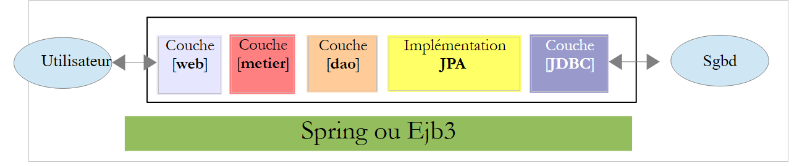
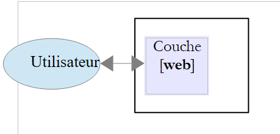

1. Einführung
Das PDF des Dokuments ist |HIER| verfügbar.
Beispiele aus dem Dokument finden Sie |HIER|.
Hier möchten wir die wichtigsten Konzepte von Struts 2 anhand von Beispielen vorstellen. Struts 2 ist ein Web-Framework, das Folgendes bietet:
- eine Reihe von Bibliotheken in Form von JAR-Dateien
- ein Entwicklungsframework: Struts 2 beeinflusst die Art und Weise, wie eine Webanwendung entwickelt wird.
Die Voraussetzungen zum Verständnis der Beispiele sind wie folgt:
- Grundkenntnisse der Programmiersprache Java
- Grundkenntnisse in der Webentwicklung, insbesondere in HTML.
Alle Ressourcen, die zur Erfüllung dieser Voraussetzungen benötigt werden, finden Sie auf der Website [https://developpez.com]. Einige davon habe ich selbst verfasst; diese finden Sie auf der Website [https://stahe.github.io].
Die Beispiele in diesem Dokument sind unter der URL [https://stahe.github.io/de-struts2-janv-2012/] verfügbar.
Um mehr über Struts 2 zu erfahren, können Sie die folgenden Quellen nutzen:
- [ref1]: die Struts-2-Dokumentation, verfügbar auf der Struts-Website
- [ref2]: das Buch „Struts 2 in Action“ von Donald Brown, Chad Michael Davis und Scott Stanlick, erschienen bei Manning. Dieses Buch ist besonders lehrreich.
Wir werden gelegentlich auf [ref2] verweisen, um den Leser darauf hinzuweisen, dass er ein Thema mithilfe dieses Buches vertiefen kann.
Dieses Dokument wurde so verfasst, dass es auch ohne Computer zur Hand gelesen werden kann. Daher haben wir viele Screenshots eingefügt.
1.1. Die Rolle von Struts 2 in einer Webanwendung
Betrachten wir zunächst die Rolle von Struts 2 bei der Entwicklung einer Webanwendung. Meistens basiert diese auf einer mehrschichtigen Architektur wie der folgenden:
 |
- Die [Web-]Schicht ist die Schicht, die mit dem Benutzer der Webanwendung in Kontakt steht. Der Benutzer interagiert mit der Webanwendung über Webseiten, die von einem Browser angezeigt werden. In dieser Schicht befindet sich Struts 2, und zwar ausschließlich in dieser Schicht.
- Die [Business]-Schicht implementiert die Geschäftslogik der Anwendung, wie beispielsweise die Berechnung eines Gehalts oder einer Rechnung. Diese Schicht nutzt Daten vom Benutzer über die [Web]-Schicht und aus dem DBMS über die [DAO]-Schicht.
- Die [DAO]-Schicht (Data Access Objects), die [JPA]-Schicht (Java Persistence API) und der JDBC-Treiber verwalten den Zugriff auf die DBMS-Daten. Die [JPA]-Schicht dient als ORM (Object-Relational Mapper). Sie fungiert als Brücke zwischen den von der [DAO]-Schicht verwalteten Objekten und den Zeilen und Spalten der Daten in einer relationalen Datenbank.
- Die Integration der Schichten kann mithilfe eines Spring-Containers oder EJB3 (Enterprise JavaBeans) erreicht werden.
Die meisten der unten aufgeführten Beispiele verwenden nur eine einzige Schicht, die [Web]-Schicht:
 |
Dieses Dokument schließt jedoch mit der Erstellung einer mehrschichtigen Webanwendung ab:
 |
Die Schichten [Business], [DAO] und [JPA/Hibernate] werden uns als JAR-Archiv zur Verfügung gestellt, sodass wir wiederum nur die [Web]-Schicht erstellen müssen.
1.2. Das Struts 2 MVC-Entwicklungsmodell
Struts 2 implementiert das MVC-Architekturmuster (Model–View–Controller) wie folgt:
 |
Die Verarbeitung einer Client-Anfrage verläuft wie folgt:
Die angeforderten URLs haben die Form http://machine:port/contexte/rep1/rep2/.../Action. Der Pfad [/rep1/rep2/.../Action] muss einer in einer Struts-2-Konfigurationsdatei definierten Aktion entsprechen; andernfalls wird er abgelehnt. Eine Aktion wird in einer XML-Datei im folgenden Format definiert:
Nehmen wir im vorigen Beispiel an, dass die URL [http://machine:port/contexte/actions/Action1] angefordert wird. Dann werden die folgenden Schritte ausgeführt:
- Anfrage – Der Browser-Client sendet eine Anfrage an den Controller [FilterDispatcher]. Der Controller verarbeitet alle Client-Anfragen. Er ist der Einstiegspunkt der Anwendung. Er ist das C in MVC.
- Verarbeitung
- Der C-Controller konsultiert seine Konfigurationsdatei und stellt fest, dass die Aktion actions/Action1 existiert. Der Namespace (Zeile 1) verkettet mit dem Aktionsnamen (name-Attribut in Zeile 2) definiert die Aktion actions/Action1.
- Der C-Controller instanziiert [2a] eine Klasse vom Typ [actions.Action1] (class-Attribut in Zeile 2). Der Name und das Paket dieser Klasse können beliebig sein.
- Wenn die angeforderte URL Parameter der Form [param1=val1¶m2=val2&...] enthält, weist Controller C diese Parameter der Klasse [actions.Action1] wie folgt zu:
Daher muss die Klasse [actions.Action1] für jeden der erwarteten parami-Parameter setParami-Methoden enthalten.
- Controller C ruft die Methode mit der Signatur [String execute()] der Klasse [actions.Action1] auf, um diese auszuführen. Diese Methode kann dann die parami-Parameter nutzen, die die Klasse abgerufen hat. Bei der Verarbeitung der Benutzeranfrage benötigt er möglicherweise die [business]-Schicht [2b]. Sobald die Anfrage des Clients verarbeitet wurde, kann er verschiedene Antworten generieren. Ein klassisches Beispiel ist:
- eine Fehlerseite, wenn die Anfrage nicht korrekt verarbeitet werden konnte
- ansonsten eine Bestätigungsseite
Die Methode execute gibt ein Ergebnis vom Typ String an den C-Controller zurück, das als Navigationsschlüssel bezeichnet wird. Im obigen Beispiel kann [*actions.Action1*].*execute zwei Navigationsschlüssel erzeugen: „page1“ (Zeile 3) und „page2“ (Zeile 4). Die Methode [actions.Action1].execute* aktualisiert zudem das M-Modell [2c], das von der JSP-Seite verwendet wird, die als Antwort an den Benutzer gesendet wird. Dieses Modell kann Elemente enthalten von:
- der instanziierten Klasse [actions.Action1]
- der Benutzersitzung
- Daten im Anwendungsbereich
- ...
- Antwort – der C-Controller weist die dem Navigationsschlüssel entsprechende JSP-Seite an, die Anzeige zu übernehmen [3]. Dies ist die Ansicht, das V in MVC. Die JSP-Seite verwendet ein M-Modell, um die dynamischen Teile der Antwort zu initialisieren, die sie an den Client senden muss.
Lassen Sie uns nun die Beziehung zwischen der MVC-Webarchitektur und der Schichtenarchitektur klären. Tatsächlich handelt es sich hierbei um zwei unterschiedliche Konzepte, die manchmal verwechselt werden. Nehmen wir eine einschichtige Struts 2-Webanwendung:
 |
Wenn wir die [Web]-Schicht mit Struts 2 implementieren, erhalten wir zwar eine MVC-Webarchitektur, aber keine mehrschichtige Architektur. Hier übernimmt die [Web]-Schicht alles: Darstellung, Geschäftslogik und Datenzugriff. Bei Struts 2 sind es die [Action]-Klassen, die diese Arbeit verrichten.
Betrachten wir nun eine mehrschichtige Webarchitektur:
 |
Die [Web-]Schicht kann ohne Framework und ohne Befolgung des MVC-Modells implementiert werden. Wir haben dann eine mehrschichtige Architektur, aber die Web-Schicht implementiert das MVC-Modell nicht.
In MVC haben wir gesagt, dass das M-Modell das der V-Ansicht ist, d. h. die Menge der von der V-Ansicht angezeigten Daten. Manchmal (oft) wird eine andere Definition des M-Modells in MVC angegeben:
 |
Viele Autoren sind der Ansicht, dass das, was sich rechts von der [Web]-Schicht befindet, das M-Modell von MVC bildet. Um Mehrdeutigkeiten zu vermeiden, können wir uns auf Folgendes beziehen:
- das Domänenmodell, wenn wir uns auf alles rechts von der [Präsentations-]Schicht beziehen
- das View-Modell, wenn wir uns auf die von einer View V angezeigten Daten beziehen
Im Folgenden bezieht sich der Begriff „M-Modell“ ausschließlich auf das Modell einer Ansicht V.
1.3. Die verwendeten Werkzeuge
Im weiteren Verlauf verwenden wir (Stand: Dezember 2011)
- die NetBeans 7.01 IDE, verfügbar unter [http://www.netbeans.org]
- das Struts 2-Plugin für NetBeans 7.01, verfügbar unter [http://plugins.netbeans.org/plugin/39218]
- Struts 2 Version 2.2.3, verfügbar unter [http://struts.apache.org/]
Beachten Sie, dass für die Entwicklung der folgenden Beispiele nur die unter [http://struts.apache.org/] verfügbaren Struts 2-Bibliotheken erforderlich sind. NetBeans kann durch eine andere IDE (Eclipse, JDeveloper, IntelliJ usw.) ersetzt werden, und das Struts 2-Plugin dient lediglich dazu, dem Entwickler die Arbeit zu erleichtern. Es ist ebenfalls nicht zwingend erforderlich.
1.3.1. NetBeans IDE
Auf der NetBeans-Download-Seite wählen wir die Java EE-Version aus:

1.3.2. Struts 2-Plugin
Je nach NetBeans-Version war dieses Plugin nicht immer verfügbar. Seit Dezember 2011 ist es unter der URL [http://plugins.netbeans.org] zu finden. Diese URL listet die verschiedenen für NetBeans verfügbaren Plugins auf. Sie können Ihre Suche filtern. Unter [1] suchen wir nach Plugins, deren Name das Wort „struts“ enthält.
 |
- Folgen Sie dem Link [2]
 |
Laden Sie das Plugin herunter und entpacken Sie es [2]. Um es in NetBeans zu integrieren, gehen Sie wie folgt vor:
- Starten Sie NetBeans
 |
- Wählen Sie unter [1] das Menü „Tools/Plugins“
- Klicken Sie auf der Registerkarte [2] auf die Schaltfläche [3]
- Wählen Sie unter [4] die .nbm-Dateien für die heruntergeladenen Plugins aus. Hier wählen wir die Struts 2.2.3-Bibliotheken anstelle derjenigen für Struts 2.0.14
- Kehren Sie zum Reiter [2] zurück und installieren Sie die ausgewählten Plugins über die Schaltfläche [5].
Die Installation von Plugins erfordert oft einen Neustart von NetBeans.
1.3.3. Die Struts 2-Bibliotheken
Wenn Sie das Struts 2-Plugin für NetBeans heruntergeladen haben, verfügen Sie über die wichtigsten Struts-Bibliotheken, jedoch nicht über alle. Später benötigen wir bestimmte Bibliotheken, die auf der Struts 2-Website [http://struts.apache.org/] verfügbar sind.
 |
Folgen Sie dem Link [1] und dann dem Link [2], um die ZIP-Datei für Version 2.2.3.1 herunterzuladen. Sobald die Distribution entpackt ist, finden Sie die von Struts benötigten Bibliotheken im Ordner [lib] [3] der Distribution. Da es Dutzende davon gibt, stellt sich die Frage, welche davon unverzichtbar sind. Hier kommt uns das Struts-Plugin zu Hilfe.